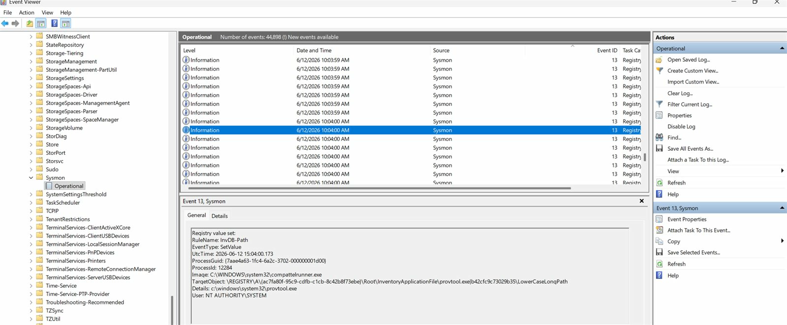

Sysmon Log Analysis
Practice project for reviewing Windows endpoint telemetry, identifying notable process activity, and documenting triage findings.
- Tools used
- Sysmon, Windows Event Viewer, Wazuh, spreadsheets
- Skill demonstrated
- Endpoint telemetry review and investigation writing